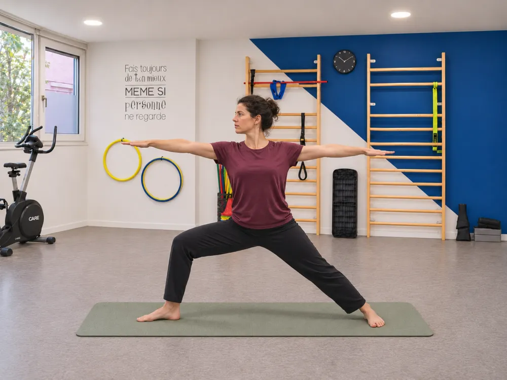
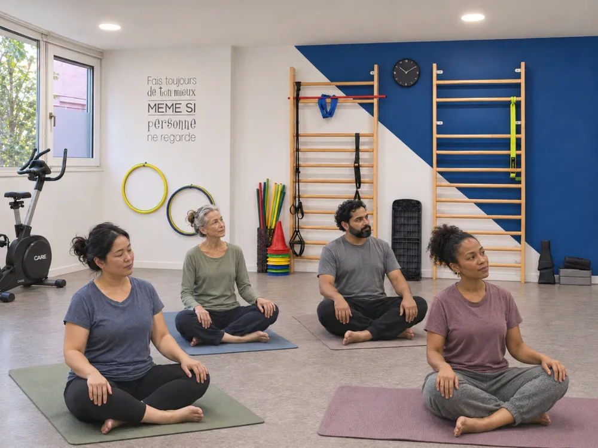
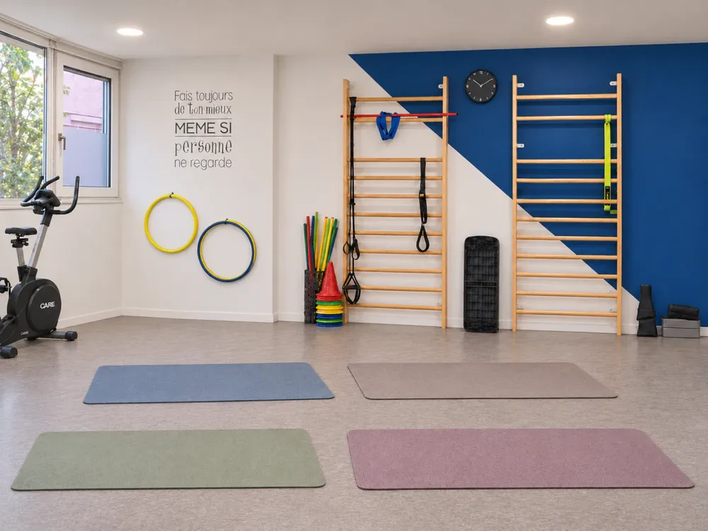

Prenatal
During pregnancy, to support a changing body, relieve the back and pelvis, and prepare for birth through breathing.
Yoga in Pantin
Inhabiting your body is something you learn. Yoga trains attention and concentration: you come back to the present moment, to your breath, to your points of support.
You also explore, try new things and have fun, and confidence in your body grows along the way.
Every body can practise, yours included, whatever your age, your flexibility, your gender or your history. Come as you are: every posture has its variations, and resting is part of the class.


The approach
I have practised yoga since 2013. It has allowed me to trust my body more, to listen to it with kindness and to move without striving for performance.
I trained in vinyasa yoga at Ayu Yoga School, whose demanding, inclusive and decolonial approach fully matches my values. For prenatal and postnatal yoga, I was trained by Bernadette de Gasquet.
My work as a physiotherapist also informs every class: I know bodies that are changing, bodies in pain, bodies regaining confidence.
Three practices, for different moments in life.
During pregnancy, to support a changing body, relieve the back and pelvis, and prepare for birth through breathing.
After the birth, to regain your stability and strength while respecting the pelvic floor. Babies are welcome.
A flowing sequence in which movement follows the breath, to build strength and mobility. You set the intensity.
Group classes are booked on Doctolib, private classes by email.

Accessible to pushchairs and people with reduced mobility
Hesitating before you start? Here are the questions I am asked most often.
Yes. The classes are designed to be accessible without experience. I demonstrate each posture, I offer variations and you can stop at any time.
Not at all. Flexibility is neither a starting point nor a goal: the aim is above all to move with more ease and to breathe better.
Yes. If in doubt, talk to your doctor or your midwife.
Most of the time, yes. Let me know at the start of the class so that I can adapt the postures. If the pain is recent or severe, a medical consultation remains the first step.
Group classes are booked on Doctolib. For a private class, write to me.
To cancel a group class, go to Doctolib. Otherwise, write to me. A cancellation made up to 24 hours before the class is not deducted.
5-class passes are valid for 6 months from the date of purchase.
Group classes are booked online, on Doctolib. For a private class, write to me: tell me what brings you and I will reply with the next available dates.
For care on prescription: female and male pelvic floor, pregnancy and postpartum, infants, scars.
Find out more